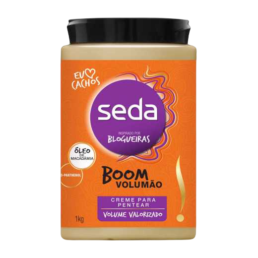

TIPO 3C
O cabelo 3C se caracteriza por ter fios mais finos e mais tendência ao ressecamento, ao volume e ao frizz.
Seus fios formam cachinhos bem definidos, fechados e estreitos.
Te indicamos então: Soul Power
O Creme de Pentear Seda Boom Volumão 1kg é um creme de pentear para cabelos cacheados.
Uma linha inspirada por blogueiras para super hidratar seus cachos, pensado com a quantidade ideal para atender a necessidade do volumão do cabelo cacheado.
Formulado com exclusiva fórmula que contém D-Panthenol e Óleo de Macadâmia, este produto vai deixar os cachos mais soltos e ainda oferece definição por 24 horas.<3
